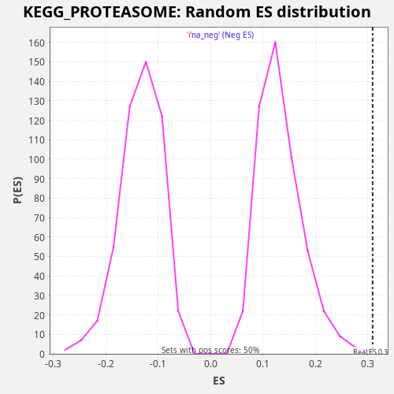

Profile of the Running ES Score & Positions of GeneSet Members on the Rank Ordered List
The same image in compressed SVG format
| Dataset | rnk |
| Phenotype | NoPhenotypeAvailable |
| Upregulated in class | na_pos |
| GeneSet | KEGG_PROTEASOME |
| Enrichment Score (ES) | 0.30943704 |
| Normalized Enrichment Score (NES) | 2.321369 |
| Nominal p-value | 0.002008032 |
| FDR q-value | 0.0053579346 |
| FWER p-Value | 0.054 |
| SYMBOL | RANK IN GENE LIST | RANK METRIC SCORE | RUNNING ES | CORE ENRICHMENT | |
|---|---|---|---|---|---|
| 1 | PSME1 | 454 | 3.298 | 0.0024 | Yes |
| 2 | PSMB8 | 546 | 2.521 | 0.0228 | Yes |
| 3 | PSMA4 | 636 | 2.032 | 0.0434 | Yes |
| 4 | PSMB9 | 752 | 1.559 | 0.0627 | Yes |
| 5 | PSMA5 | 767 | 1.505 | 0.0870 | Yes |
| 6 | PSMD14 | 870 | 1.243 | 0.1069 | Yes |
| 7 | PSMC2 | 877 | 1.233 | 0.1316 | Yes |
| 8 | PSME2 | 884 | 1.220 | 0.1563 | Yes |
| 9 | PSMC6 | 968 | 1.046 | 0.1771 | Yes |
| 10 | POMP | 1218 | 0.724 | 0.1897 | Yes |
| 11 | PSMD7 | 1558 | 0.442 | 0.1978 | Yes |
| 12 | PSMD13 | 1606 | 0.416 | 0.2205 | Yes |
| 13 | PSMA3 | 1863 | 0.312 | 0.2327 | Yes |
| 14 | PSMB10 | 1902 | 0.298 | 0.2558 | Yes |
| 15 | PSMC3 | 3341 | 0.084 | 0.2091 | Yes |
| 16 | PSMC1 | 3401 | 0.080 | 0.2312 | Yes |
| 17 | PSMB4 | 3766 | 0.060 | 0.2380 | Yes |
| 18 | PSMA1 | 3880 | 0.055 | 0.2574 | Yes |
| 19 | PSMB5 | 3931 | 0.052 | 0.2799 | Yes |
| 20 | PSMD2 | 3938 | 0.052 | 0.3046 | Yes |
| 21 | PSMD11 | 4646 | 0.030 | 0.2943 | Yes |
| 22 | PSMA6 | 4873 | 0.024 | 0.3081 | Yes |
| 23 | PSMC4 | 5430 | 0.015 | 0.3053 | Yes |
| 24 | PSMD4 | 5942 | 0.009 | 0.3048 | Yes |
| 25 | PSMB7 | 6846 | 0.003 | 0.2848 | Yes |
| 26 | PSMD1 | 6993 | 0.003 | 0.3025 | Yes |
| 27 | PSMB2 | 7357 | 0.002 | 0.3094 | Yes |
| 28 | PSMA7 | 8198 | 0.000 | 0.2926 | No |
| 29 | PSMD12 | 10938 | -0.001 | 0.1810 | No |
| 30 | PSMD6 | 11030 | -0.001 | 0.2014 | No |
| 31 | PSME4 | 11379 | -0.002 | 0.2091 | No |
| 32 | PSMB3 | 11630 | -0.003 | 0.2216 | No |
| 33 | PSMD8 | 12400 | -0.007 | 0.2083 | No |
| 34 | PSMA2 | 12557 | -0.008 | 0.2255 | No |
| 35 | PSMD3 | 12589 | -0.008 | 0.2489 | No |
| 36 | PSME3 | 12916 | -0.010 | 0.2577 | No |
| 37 | PSMC5 | 13521 | -0.016 | 0.2526 | No |
| 38 | PSMF1 | 15826 | -0.076 | 0.1627 | No |
| 39 | PSMB6 | 16796 | -0.144 | 0.1394 | No |
| 40 | PSMB1 | 19648 | -4.187 | 0.0222 | No |

{kind=link}
{kind=link}